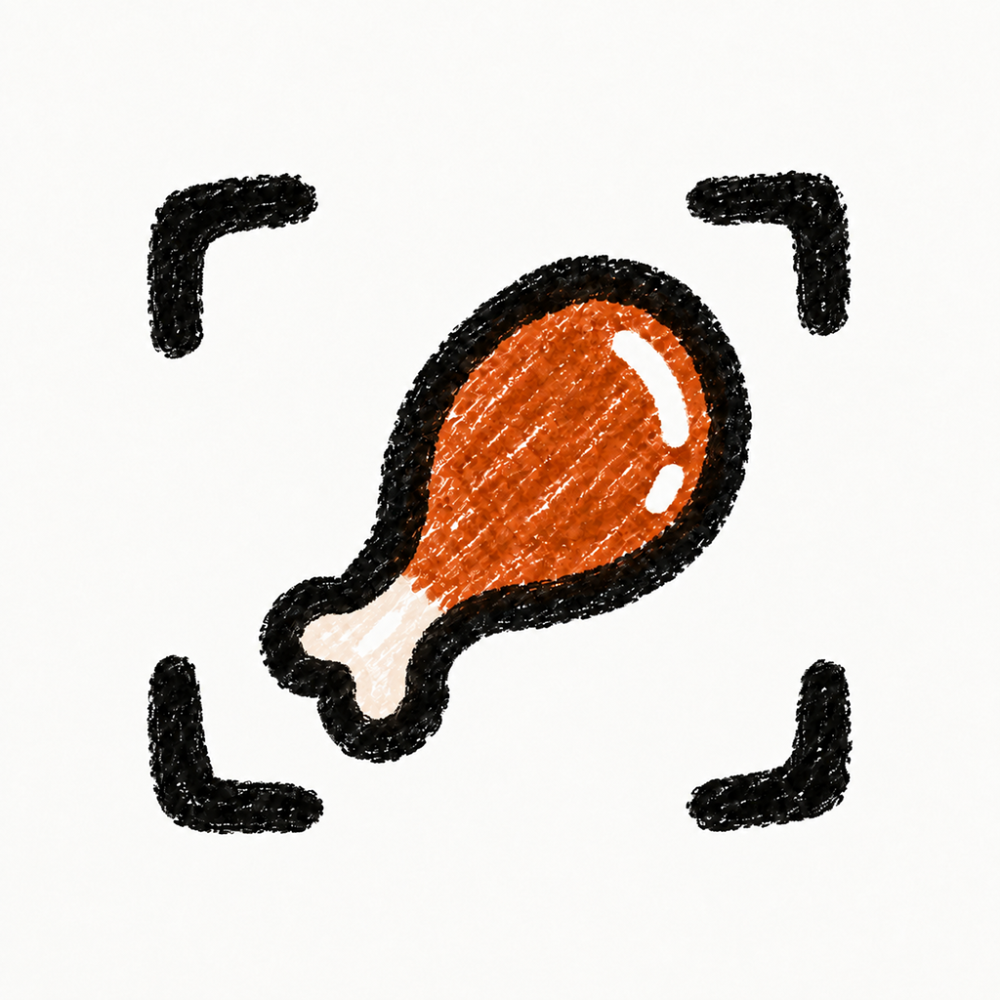
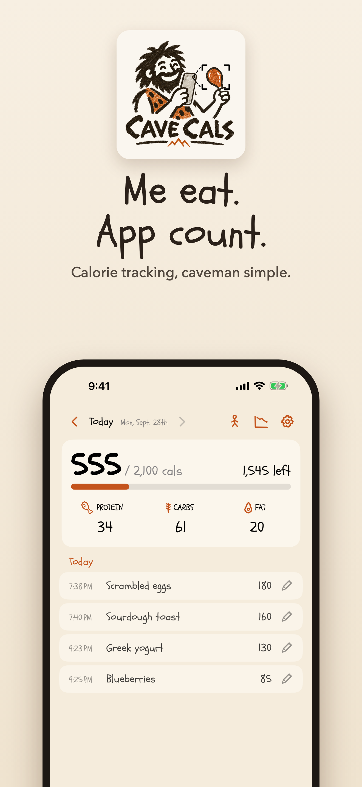
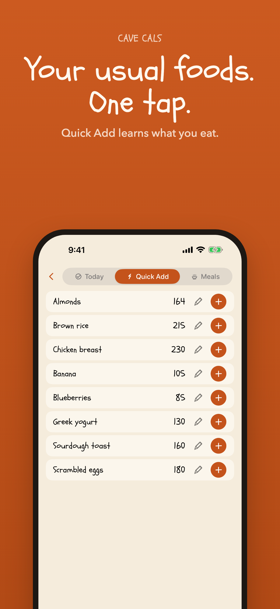
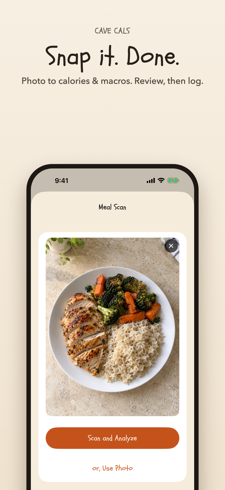

Cave Cals Get the appMe eat.
App count.
The calorie tracker so simple, a caveman uses it. Snap a photo, say what you ate, or tap your usual foods once.
Download on the App Store
Your usuals, one tap
Quick Add learns what you eat and when. Same breakfast? Tap once.
Snap it
Photo to a calorie and macro estimate. Review it, fix a portion, log it.
Say it
“Two eggs, toast, big coffee.” Voice Log turns it into a food list. Or ask Siri.
Barcode scan, free
Plus food and restaurant search and manual logging. No premium needed.





Free where it counts
Free, always
- Food and restaurant search
- Barcode scanning
- Manual logging and one-tap Quick Add
- Saved meals, weigh-ins, and progress charts
- Calorie plan, protein/carb/fat goals, widgets, Apple Health
Cave Cals+
- Meal Scan: photo to calories and macros
- Voice Log: say what you ate
- Import a recipe from a link
- 10 free photo/voice tries before you decide
Personal trainer or coach?
Your clients log in seconds, and every Sunday they can send you a one-page Weekly Recap: averages, macros, weight trend, and six weeks of history. Coaches get free Cave Cals+ and a client code.
Questions
Is Cave Cals free?
Yes. Search, barcode scanning, manual logging, meals, weigh-ins, and progress are free. Cave Cals+ adds photo and voice logging and recipe import, with 10 free tries first.
Do I need an account?
No. Your diary stays on your iPhone, with private iCloud sync when available.
How accurate are photo estimates?
They're estimates. You always see the foods and portions before logging and can fix anything. Close enough every day beats perfect once a week.
Does it work with Apple Health?
Yes, if you turn it on. Cave Cals can write your calories, macros, and weigh-ins to Apple Health. It never reads your Health data.
Android?
iPhone only for now.